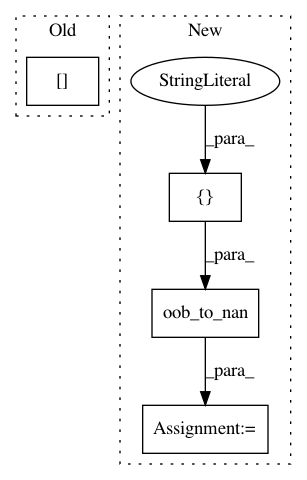

a5d1cf98f0ec5c72fb48336cafaf31bf11e6128e,src/pudl/analysis/mcoe.py,,mcoe,#Any#Any#Any#Any#Any#,311
Before Change
if min_cap_fact is not None:
mcoe_out = mcoe_out[mcoe_out.capacity_factor >= min_cap_fact]
if max_cap_fact is not None:
mcoe_out = mcoe_out[mcoe_out.capacity_factor <= max_cap_fact]
return mcoe_out
After Change
// Filter the output based on the range of validity supplied by the user:
mcoe_out = pudl.helpers.oob_to_nan(mcoe_out, ["heat_rate_mmbtu_mwh"],
lb=min_heat_rate, ub=None)
mcoe_out = pudl.helpers.oob_to_nan(mcoe_out, ["fuel_cost_per_mwh"],
lb=min_fuel_cost_per_mwh, ub=None)
mcoe_out = pudl.helpers.oob_to_nan(mcoe_out, ["capacity_factor"],
lb=min_cap_fact, ub=max_cap_fact)
return mcoe_out
In pattern: SUPERPATTERN
Frequency: 3
Non-data size: 4
Instances
Project Name: catalyst-cooperative/pudl
Commit Name: a5d1cf98f0ec5c72fb48336cafaf31bf11e6128e
Time: 2020-05-16
Author: cgosnell@catalyst.coop
File Name: src/pudl/analysis/mcoe.py
Class Name:
Method Name: mcoe
Project Name: catalyst-cooperative/pudl
Commit Name: a5d1cf98f0ec5c72fb48336cafaf31bf11e6128e
Time: 2020-05-16
Author: cgosnell@catalyst.coop
File Name: src/pudl/analysis/mcoe.py
Class Name:
Method Name: capacity_factor
Project Name: catalyst-cooperative/pudl
Commit Name: bf7f740f3d6e2d419567109e2fdb0e264e3ad913
Time: 2019-11-16
Author: zane.selvans@catalyst.coop
File Name: src/pudl/transform/ferc1.py
Class Name:
Method Name: plants_small